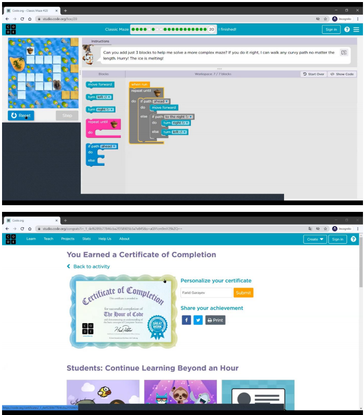
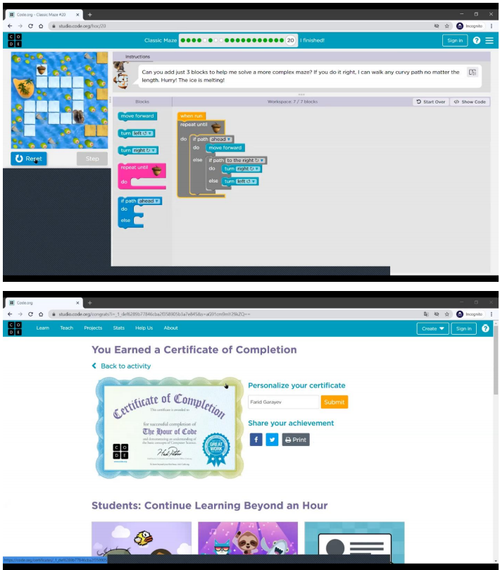

Team 13 Short Report
Team 13 consists of 4 students: Farid Garayev, Jamaladdin Talishinsky, Alsari Mohamed Abbas Saad Eldin, and Sinan Asadil. Although our team have 4 students to hold this Hour of Code event, we couldn't find a student, whose name is Alsari Mohamed Abbas Saad. So, we had to run this project bt ourselves. A project took place on 9th of Decemeber at 11:20 am. We chose British School Baku for this event. In an online meeting at Zoom, there were 17 pupils and 3 of us. We divided work among us to decrease the burden. One of the students of our team (Jamaladdin Talishinsky) helped us to choose school where we could run that Hour of Code event. Another student (Farid Garayev) acted as a tutor, showing the puzzles through the projector. And I wrote a report and took video and photos. This is a table which illustrates contribution of us:
| Team member | Contribution to the event and report | Estimated % |
| Farid Garayev | Taught pupils, showing the puzzles | 33% |
| Jamaladdin Talishinsky | Chose School | 34% |
| Sinan Asadli | Detailed described the work contributed | 33% |
| Alsari Mohamed Abbas Saad Eldin | 0% |
P.S. While we were describing the first levels, the students passed a few levels ahead of us because they had worked
with this system before and the first levels were very easy for them. When we knew the situation, we passed some levels to catch
up with them, and we passed without doing and we told them they should complete the levels with us. They, on the other hand,
welcomed us with understanding and never repeated the same problem throughout the event.
Action-packed photos:
.png) 
